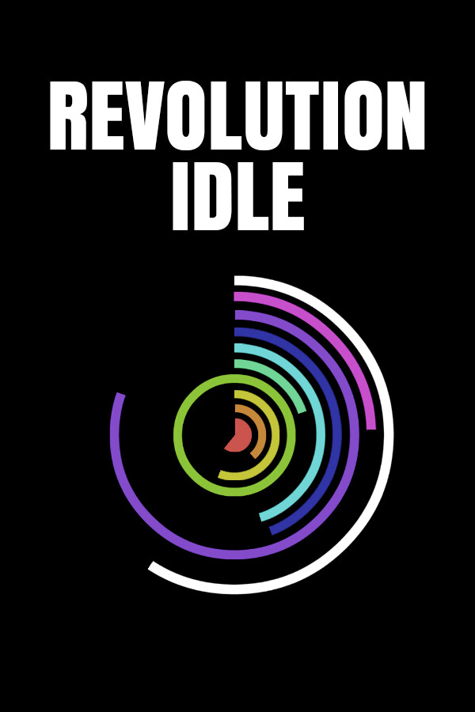

Revolution Idle
Revolution Idle
Details
|  | |
| Playtime | Not Played |
| Last Activity | Never |
| Added | 12/9/2024 13:00:45 |
| Modified | 12/9/2024 13:01:45 |
| Completion Status | Not Played |
| Library | Steam |
| Source | Steam |
| Platform | PC (Windows) |
| Release Date | 10/11/2024 |
| Community Score | |
| Critic Score | |
| User Score | |
| Genre | Indie Simulator |
| Developer | |
| Publisher | |
| Feature | Single Player |
| Links | Steam Twitch Discord |
| Tag | |
Description
Welcome to Revolution Idle!
GAME DESCRIPTION
Dive into an adventure where filling circles becomes an obsession! Revolution Idle challenges you to multiply your numbers and reach unimaginable heights.
Developed by Nu Games and Oni Gaming, Revolution Idle offers a unique experience in the idle game universe.
Will you manage to reach infinity?
KEY FEATURES
Multipliers and PrestigePurchase color spectrums to speed up circle filling and increase your multipliers.

Each of them multiplies to increase your score.
At the certain point you can prestige. You will get another multiplier and increase your exponent.
Infinity
When you reach ~1.79e308 score you can infinity. You are gaining infinities and infinity points. With these points you can buy some different upgrades that will boost your progress.

- Eternity: Reach eternity to unlock new mechanics and shatter the limits.
- Addictive Gameplay: Watch circles fill up and numbers increases, each revolution brings you closer to your goal.
- Colors: Buy color spectrums to increase the speed of filling circles and get distinctions for each ascent.
- Automations: Automate your actions to optimise your progress.
- Achievements: Complete achievements to earn bonuses.
- Time Flow: Earn offline time to accelerate your progression.
- Leaderboard: Compare your progress with other players and become the best.
- Statistics and Options: Track your progress with statistics and customize your gaming experience with various options.
- Multiplatform Support: Play on your PC or from your mobile device (Android/iOS) to progress even faster.
IN-GAME HELP
Immerse yourself in the detailed tutorial to master the game mechanics. Learn how to multiply your multipliers, optimize your upgrades, and efficiently progress towards the final goal.
ABOUT THE DEVELOPER
Nu Games and Oni Gaming are creators passionate about idle games. Join our Discord community, which boasts over 30.000 active players, and participate in the game's evolution!
Embark on the adventure today and let yourself be carried away by the captivating universe of Revolution Idle!